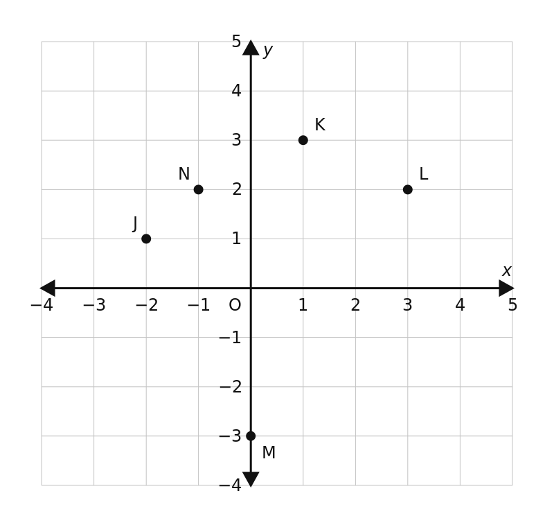
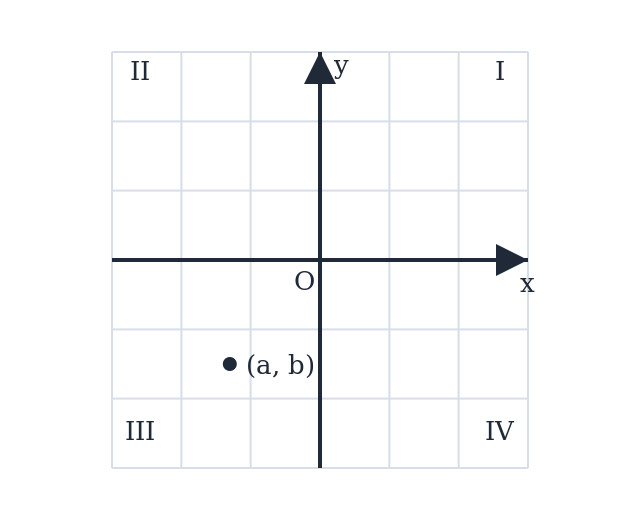
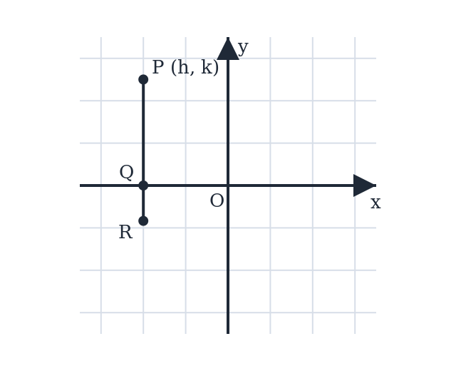
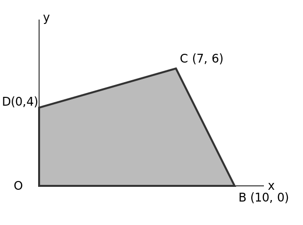
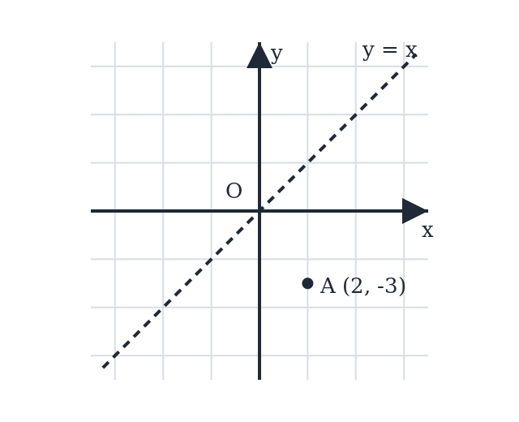

The Coordinate Plane — Practice Set
Bank code: COG-PLT · Section: Coordinate Geometry · 30 questions — Easy 11 · Medium 16 · Hard 3
Signs fix the quadrant; the axis you reflect across is the one that stays fixed; distance from an axis is an absolute value.
Every question below is live in the question bank under the ID shown — the sheet and the portal are the same questions. Attempt a level with the clock running, then check Part C.
Part A — Questions
Quantitative Comparison — the four choices are always the same, so they are not reprinted: (A) Quantity A is greater · (B) Quantity B is greater · (C) The two quantities are equal · (D) The relationship cannot be determined from the information given
Level 1 · Easy — 11 questions · ~11 min
warm-up — these must be automatic
Q1 · COG-PLT-001 · MCQ · 40s
In which quadrant does the point (3, -5) lie?
(A) Quadrant I
(B) Quadrant II
(C) Quadrant III
(D) Quadrant IV
(E) On an axis
Q2 · COG-PLT-002 · MCQ · 45s
In the xy-plane, which of the following points lies on the y-axis?
(A) (3, 0)
(B) (0, -7)
(C) (-2, 5)
(D) (1, 1)
(E) (-4, 0)
Q3 · COG-PLT-003 · MCQ · 45s
Point P has coordinates (-4, 6). What is the distance of point P from the y-axis?
(A) 2
(B) 4
(C) 6
(D) √52
(E) 10
Q4 · COG-PLT-004 · Numeric Entry · 50s
Point Q lies 5 units to the left of the y-axis and 3 units above the x-axis. What is the x-coordinate of point Q?
Numeric entry — write the number.
Q5 · COG-PLT-006 · QC · 55s
Point A = (0, 5) and Point B = (5, 0).
Quantity A: The distance of point A from the x-axis Quantity B: The distance of point B from the y-axis
Q6 · COG-PLT-007 · MCQ · 45s
A point P = (a, b) lies in Quadrant II. Which of the following must be true?
(A) a > 0 and b > 0
(B) a < 0 and b < 0
(C) a < 0 and b > 0
(D) a > 0 and b < 0
(E) a = 0 and b > 0
Q7 · COG-PLT-009 · MCQ · 60s
Point P = (3, 7) is reflected across the x-axis. What are the coordinates of the reflected point P'?
(A) (-3, 7)
(B) (3, -7)
(C) (-3, -7)
(D) (7, 3)
(E) (-7, -3)
Q8 · COG-PLT-011 · QC · 70s
Point P = (a, b) lies in Quadrant III.
Quantity A: a + b Quantity B: 0
Q9 · COG-PLT-013 · MCQ · 65s
Point R = (4, -3) is reflected across the origin. What are the coordinates of the reflected point R'?
(A) (4, 3)
(B) (-4, -3)
(C) (-4, 3)
(D) (3, -4)
(E) (-3, 4)
Q10 · COG-PLT-029 · QC · 110s
Points P = (a, b) and Q = (c, d) are both in Quadrant II, with a < c.
Quantity A: The distance of P from the y-axis Quantity B: The distance of Q from the y-axis
Q11 · COG-PLT-KMF-007 · QC · 60s
In the xy-plane, the point (m, n) lies in the second quadrant and n = -4m.
Quantity A: m + n Quantity B: mn
Level 2 · Medium — 16 questions · ~22 min
two or three steps, one planted trap each
Q12 · COG-PLT-010 · MCQ · 65s
Point A = (-5, 2) is reflected across the y-axis to produce point B. In which quadrant does point B lie?
(A) Quadrant I
(B) Quadrant II
(C) Quadrant III
(D) Quadrant IV
(E) On an axis
Q13 · COG-PLT-012 · Select all that apply · 85s
Point P = (x, y) is in Quadrant II.
Which of the following statements must be true?
Indicate all such statements.
(A) xy < 0
(B) x − y < 0
(C) x² > 0
(D) y/x < 0
(E) |x| > |y|
Q14 · COG-PLT-014 · Numeric Entry · 75s
Point A = (-6, 4) and point B is the reflection of A across the y-axis. What is the distance between A and B?
Numeric entry — write the number.
Q15 · COG-PLT-015 · QC · 75s
Point P = (a, b) lies in Quadrant IV.
Quantity A: |a| Quantity B: |b|
Q16 · COG-PLT-016 · MCQ · 70s
Two points P = (3, k) and Q = (3, -k) are symmetric about which of the following?
(A) The y-axis
(B) The x-axis
(C) The origin
(D) The line y = x
(E) The line y = 3
Q17 · COG-PLT-017 · Numeric Entry · 70s
A point P lies in Quadrant II. When P is reflected across the x-axis, the resulting point P' has coordinates (−4, −7). What is the y-coordinate of the original point P?
Numeric entry — write the number.
Q18 · COG-PLT-018 · Select all that apply · 80s
Which of the following points lie in a quadrant where the product of the coordinates (x × y) is negative? Select all that apply.
(A) (2, 5)
(B) (-3, 7)
(C) (-1, -8)
(D) (4, -6)
(E) (-9, -2)
Q19 · COG-PLT-023 · Numeric Entry · 90s
Point A = (−3, 5) is reflected across the x-axis to get point B. Point B is then reflected across the y-axis to get point C. What is the sum of the coordinates of point C?
Numeric entry — write the number.
Q20 · COG-PLT-026 · Numeric Entry · 90s
Points A = (2, 5) and B = (−2, 5) are both reflected across the origin to produce points A' and B' respectively. What is the distance between A' and B'?
Numeric entry — write the number.
Q21 · COG-PLT-027 · MCQ · 100s
Point P = (m, n) is in Quadrant II. After reflecting P across the y-axis, then reflecting the result across the x-axis, the final point P'' is in which quadrant?
(A) Quadrant I
(B) Quadrant II
(C) Quadrant III
(D) Quadrant IV
(E) On an axis
Q22 · COG-PLT-KMF-005 · MCQ · 75s
The point (p + 2, q - 3) lies in Quadrant II of the xy-plane. (A point on an axis belongs to no quadrant.) Which pair of conditions describes every possible choice of p and q?
(A) p < -2 and q > 3
(B) p < 2 and q > -3
(C) p < -2 and q > -3
(D) p < -3 and q > 2
(E) p > -2 and q < 3
Q23 · COG-PLT-KMF2-001 · MCQ · 80s
The figure above shows five points in the xy-plane. How many of them lie below the line y = 2x - 1?

(A) One
(B) Two
(C) Three
(D) Four
(E) Five
Q24 · COG-PLT-KMF2-002 · Select all that apply · 90s
A triangular plot of land is represented in the xy-plane by the set of points for which x > 0, y > 0, and 5x + 2y < 40. Which of the following points represent locations inside the plot?
Indicate all such points.
(A) (1, 18)
(B) (2, 14)
(C) (4, 9)
(D) (6, 5)
(E) (7, 3)
Q25 · SEC-CG-004 · Select all that apply · 100s
In the xy-plane, the point (a, b) lies in Quadrant III, as shown.
Which of the following points must lie in Quadrant I?
Indicate all such points.

(A) (-a, -b)
(B) (a, -b)
(C) (-b, -a)
(D) (b, a)
(E) (ab, -a)
F. (-a, b)
Q26 · SEC-CG-015 · QC · 85s
In the xy-plane, the point (c, d) lies below the x-axis and to the left of the y-axis, and c = 3d.
Quantity A: c Quantity B: d
Q27 · SEC-CG-037 · MCQ · 95s
The figure shows segment PR in the xy-plane. PR is parallel to the y-axis and crosses the x-axis at point Q. Point P is (h, k), where h < 0 and k > 0. If the length of QR is one third the length of PQ, what are the coordinates of R in terms of h and k?
Note: Figure not drawn to scale.

(A) (h, -k/3)
(B) (-h, k/3)
(C) (h/3, -k)
(D) (h, k/3)
(E) (-h/3, -k)
Level 3 · Hard — 3 questions · ~5 min
where 162+ is won or lost
Q28 · COG-PLT-022 · Select all that apply · 100s
Point P = (a, b) satisfies the condition ab > 0. Point Q = (-a, b).
Which of the following statements must be true?
Indicate all such statements.
(A) Point Q is in the quadrant diagonally opposite to point P
(B) P and Q are symmetric about the y-axis
(C) The product of Q's coordinates is negative
(D) Q cannot lie on any axis
(E) P and Q have the same distance from the x-axis
Q29 · COG-PLT-KMF-006 · MCQ · 110s
In the xy-plane, quadrilateral OBCD has vertices O(0, 0), B(10, 0), C(7, 6) and D(0, 4). How many square units does the region enclosed by OBCD cover?

(A) 30
(B) 44
(C) 51
(D) 53
(E) 60
Q30 · SEC-CG-008 · Numeric Entry · 115s
In the xy-plane, point A is (2, -3), as shown. A is first reflected across the line y = x, and the resulting point is then translated 5 units to the right and 4 units up. How many units apart are A and the final image?

Numeric entry — write the number.
The rest of this sheet is part of Pro
All 30 questions, the answer key and full worked solutions with every trap named — plus 75 concept notes and 5,868 questions.